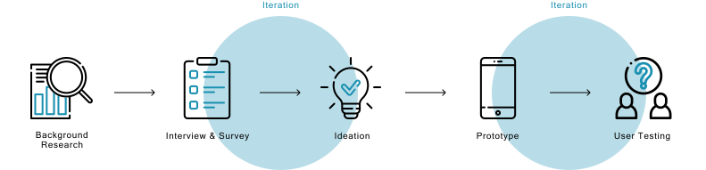

Overview
Thirsty bottle and its own app are designed for people who are struggling to drink tap water, find reusable water bottles that suit them and maintain or start healthy drinking habits. The Thirsty bottle purifies and keeps the water cold and sends data to the Thirsty app. The app is aimed at keeping users accountable by showing their water consumption, demonstrating their contribution in conserving the environment and providing the social support system, and eventually reducing the overall plastic bottles purchased.
Objective
Provides an innovative digital solution that at its core encourages the users to reduce the amount of single-use plastic water bottles they purchase. Focusing on user behaviour and the psychology behind purchasing decisions, the app is aimed at providing users with an immersive and engaging experience, that encourages them to make the more environmentally friendly choice.
Workflow
Background Research
Research shows that one million single-use plastic water bottles are purchased globally every minute, which roughly equates to 20,000 water bottles per second. In 2015 Australia specifically, approximately 5.7 million people consumed bottled water across any 7 day period ("Bottled water consumption booming", 2020), and the Single-use PET water bottles are only recycled 36% of the time in Australia ("Water bottle refill - University of Wollongong – UOW", 2020). With the low recycling rate, it is simply not sustainable if we continue to buy, consume and dispose of plastic water bottles in the manner and at the rate that we currently are.
To reduce the overall amount of bottled water people consume in general, we focused our research on why are consumers choosing bottled water and their water drinking habit. Literature has shown that the taste, odor, color, temperature and quality of tap water all have influences on people’s drinking water choices (Delpla et all., 2020; Levallois, Grondin, & Gingras, 1999). Additionally, self-image is also a factor as to why people consume bottled water, particularly its trendiness and the image consumers wish to portray of themselves (Ballantine, Ozanne & Bayfield, 2019; Etale, Jobin & Siegrist, 2018). Another factor that contributes to the consumption of bottled water is the convenience and accessibility of water sources. It is easy to find bottled water in almost any store so people still consume bottled water when they are out and about even if they drink tap water at home (Etale, Jobin & Siegrist, 2018).
User Research
The survey and interview were designed to ask specific questions that would allow us to gain insight into the habits, preferences, buying behaviors and decision-making factors regarding single-use plastic water bottles and drinking water.
Almost 40% of them said that the brand of water influences their buying decisions. 15% of them chose ‘flavor’ as their motivator, and none chose brand identity. Most participants only purchase disposable water bottles because they feel that they have no suitable alternative. The reusable bottles on the market can be hard to carry, too heavy, not well designed or take up too much space. Participants who have reusable bottles, on the other hand, tend to forget to bring their bottles with them when they are out and about.
Emphasis
With the literature and user research in mind, we completed two user personas that allow us to visualize users’ needs and frustrations.


Problem Statement
How could we encourage people choose tap water over bottled water?
Iteration
The four of us came up with 1-2 ideas each ranging from bottled water that is made of environmentally friendly materials, special water dispensers that provide tap water with various of flavors to smart water bottles with paired mobile app that support numerous functions to motivate people use reusable water bottles.
We discussed and iterated the ideas as a team that ‘the smart water bottles with paired mobile app’ would meet most of our user needs among all the ideas. Additionally, we integrated it with a support system, which is a common motivator for constructing new habits, to promote the use of this product.

The Thirsty Bottle
This bottle focuses on making the traditional reusable bottle smarter & more convenient, with features like a collapsible body & tracking sensors that send data to a mobile app.
The bottle is lightweight, collapsible and made of sustainable materials. It has flexible thermal lining protection to ensure water stays cold, and the ability to self-cleaning to maintain and improve the sanitary level of drinking water.
The Thirsty Bottle
The bottle page shows the status of your bottle including the remaining battery percentage, your bottle location, and a button to purify water in the bottle.
Analysis and Customization
Users’ personal goals and water intake processes are shown in the profile page. Here also demonstrates the plastic bottles saved and water consumption history in line graph with the option of showing weekly and monthly. Users can also set reminders for drinking water, refilling water, auto-cleaning water and bringing the bottle with them.
The Support Community
Users can form teams to compete and support team members and contribute to the environment as a team. They can also view other users’ progresses and chat with them to engage with the community.